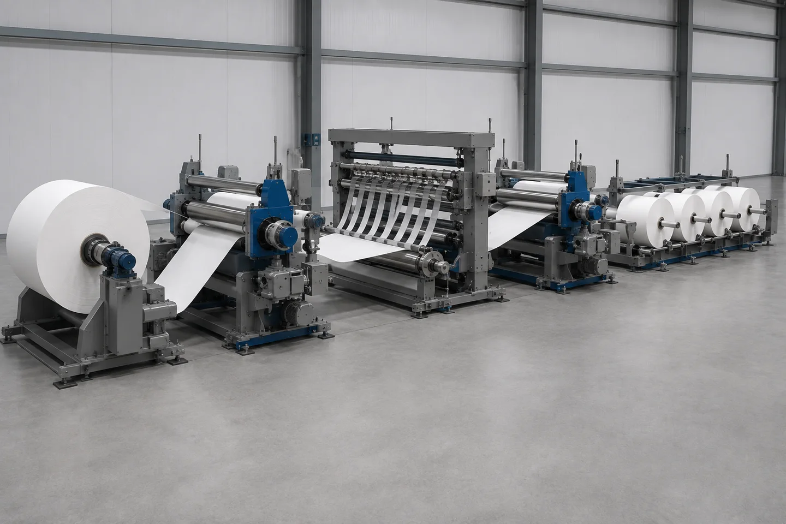

Published August 30, 2026 | By HDPTH Technical Editorial Team

When a quotation lists an infeed nip roll or outfeed nip roll, ask what tension zone it defines, which drive controls it and how the choice will be demonstrated on the actual web. A station that helps isolate one material can create compression or slip on another.
This guide covers that buyer decision: the boundary a driven nip creates, the main traction layouts, the control questions to put in an RFQ, and the FAT evidence needed for commissioning.
What a driven nip roll does in a slitter rewinder
A tension zone is a web-path segment in which machine-direction tension is isolated from other segments. An element able to change web force—such as an unwind, rewind, driven roll or driven nip—forms the boundary. Between boundaries, the web has its own tension behavior and control requirement. Slitter rewinder tension zones are therefore control relationships, not lines painted on the frame.
A driven nip roll uses a motorized roll or traction station to grip the web positively. Its drive can follow a line-speed reference or be trimmed from measured tension, giving the controller an active way to separate an upstream disturbance from a downstream process span. Actual control still depends on contact, drive response, sensing and material behavior.
Do not confuse the station with nearby components.
- An idler roll is carried by the moving web. It supports or redirects the path but does not independently establish a controllable boundary.
- A rewind lay-on roll presses against the building roll for contact, air removal and winding behavior; it is not automatically an intermediate-zone nip.
- The rewind roll or winder pulls the web in the rewind zone. It may bound that zone, but its job and disturbances differ from a nip around a slitting or process span.
Placement is a design question. An infeed nip roll may sit before the main drive or slitting span to separate upstream conditions. An outfeed nip roll may sit after the process span when the downstream section needs its own pull. A line can need one, both or neither; the answer follows from the web path and control objective, not a universal template.
When tension-zone isolation earns its place
Isolation earns its place when a process span must behave independently. Slitting can change contact and drag as knives engage different structures. A splice, parent-roll eccentricity, speed change, slit pattern or downstream roll build can send a disturbance through a long span, leaving the operator unsure which section caused the tension change.
Map the line as separate spans before requesting hardware: unwind, intermediate or slitting/process, and rewind. For each, record the pulling or braking element, sensor location, disturbances, material limit and expected behavior at start, acceleration, stop and web break. An element that actively changes speed or torque can be a boundary; a support-only roll cannot substitute for it.
An intermediate tension zone is useful when the process span has a different need from unwind or rewind. A controlled infeed nip can isolate upstream conditions; a controlled outfeed nip can keep the winder’s changing pull from reaching the process span. The main drive may sit between them, or a single driven station and the winder may provide adequate separation. The quotation should show which case applies.
No rule says every slitter rewinder needs a fixed zone count or a nip at every boundary. A stable web and short path may not justify extra contact; an additional nip adds cost and surfaces to clean, guard and maintain. If a span must be tuned independently, however, omitting the boundary leaves the loop correcting a disturbance it cannot isolate.
Use a decision test: name the disturbance and protected span, identify the active boundary element, and state how tension will be measured. Vague answers mean the quotation is listing rollers, not specifying tension-zone isolation.
Nip, S-wrap and traction-roll layouts
Choose the layout from the material envelope and required web path; a label alone does not prove suitability.
Paired-roll nip. Two rolls close on the web and one or both are driven. Positive grip gives a clear, compact infeed or outfeed boundary when the web tolerates the contact. Specify closure actuation, pressure or load indication, release for threading and cleaning access; “nip included” is not enough.
S-wrap traction. An S-wrap leads the web around highly wrapped driven rolls to obtain traction through wrap rather than one pinch interface. It uses more path length and adds surfaces, bearings and guarding. Ask for the wrap arrangement, roll surfaces, cleaning access and threading response. More wrap cannot compensate for a damaged or unsuitable contact surface.
Direct roll drive. A driven roll can pull directly where the contact path supplies enough traction. This may simplify the nip mechanism and reduce compression, but smooth film, contamination or changing wrap can increase slip risk. Ask how slip is detected or inferred, where tension is measured and how a speed mismatch is handled.
All three rely on positive grip: the web must stay coupled to the driven surface so speed or trim can affect tension. Wrap increases contact opportunity; a nip adds closing grip. Slip occurs when contact cannot transmit the pull or is changed by contamination or material behavior. It may appear as an unstable trend, speed mismatch, marks, wrinkles or inconsistent rolls, and is not ruled out by “servo” or “traction.”
Ask for one drawing showing web contact, motor, sensor, threading route and cleaning points. It exposes the trade-off better than a component name.

Control architecture: master speed, follower drive and feedback
A driven nip only works through its relationship with the line. Identify the master speed reference, usually the main drive’s commanded web speed. A follower receives that reference and uses a controlled offset or trim so the intermediate zone reaches its required tension; matching the displayed speed alone does not control web force.
With closed-loop feedback, a load cell or approved tension sensor measures the zone. The controller compares the signal with its set point and changes the controlling element. A nip before the main drive may be trimmed slower relative to the main section; a nip after it may be trimmed faster. Document the direction and limits for the quoted path rather than copying a universal recipe.
For an infeed nip, ask which drive is master, where process-span tension is sensed and how upstream changes are isolated. For an outfeed nip, ask how downstream pull is trimmed without destabilizing the process. If both are present, require a diagram showing each loop’s sensor, reference, actuator and interlock. A follower without positive grip cannot control a zone reliably.
Request the reference path, set-point handling, trim limits, acceleration and deceleration behavior, start/stop logic, emergency-stop and web-break response, sensor alarms and restart permissions. Ask whether recipes store material, zone targets and approved settings. Do not accept vendor tuning values as universal; the right values depend on geometry, web elasticity, traction and the complete machine response.
Feedback choice has a purpose: a load cell provides a direct tension signal at a selected roll, while a dancer represents position or force behavior differently. Neither removes the need for a stable path and commissioned loop. Use the load-cell versus dancer feedback selection guide, then require the selected signal in the zone trend.
Material risks: compression, marking, slip and contamination
A driven nip changes the web’s mechanical environment. Delicate or compressible nonwovens can flatten, stretch or mark when closure or surface selection is wrong, and porous structures may behave unlike dense film. Use a representative-material trial to establish the material limits and operating window rather than a generic pressure setting.
Film may slip, build static or move laterally on an unsuitable surface. Paper may scuff, damage at the edge or transfer dust. Coated and laminated webs may show coating transfer, blocking or rub marks. For each family, ask whether contact surface, wrap, cleaning and release were evaluated on the actual construction; a trial on uncoated paper does not prove a coated laminate.
Compression and traction are not interchangeable. More closure may add grip and marking risk; more wrap may add contact and path length. Specify pressure or load indication, actuation and an alarm for an unexpected nip state. Do not prescribe universal pressure, hardness, friction or speed trim outside an approved material process.
Lint, adhesive, residue and dust can alter contact or transfer to the web. Specify guarded but inspectable rolls, safe cleaning isolation and a threading route away from a closed nip. Verify that servicing prevents unintended close or restart. A driven nip may support stable control, but it does not automatically prevent wrinkles, breaks, telescoping or marking; evidence must identify material, path and inspection result.
How to write the RFQ specification
Write the RFQ so the supplier can draw the web path and the FAT can repeat it. HDPTH’s published buyer information asks for material type, parent-roll width, finished-roll width, roll diameter, target speed, application industry and destination country. It also says that width, speed, knife system, winding method, controls and auxiliary equipment can be customized by project. The driven-nip decision needs the detail below.
Include these items in the request:
- Material envelope: family, thickness or GSM, width, surface treatment, porosity, elasticity, compressibility, coating or laminate, approved extremes, splices and contamination risks. Attach samples or representative data.
- Roll and product format: parent and finished formats, core details, slit pattern, handling limits and post-winding quality attributes.
- Zone map: unwind, slitting/process and rewind spans; proposed infeed/outfeed boundaries; master and follower drives; sensors; disturbances; and each span’s tension objective. Require a marked-up diagram.
- Traction hardware: paired nip, S-wrap or direct driven roll; surfaces; wrap; actuation; pressure/load indication; release and threading; guarding; cleaning; and wear provisions.
- Drive and control: master/follower references, speed trim, closed-loop feedback, sensors, displays, trends, alarms, interlocks, web-break response, recipes, access levels and change control.
- FAT and documents: approved material and difficult limits, low-speed thread-up, acceleration/stopping profile, stable-running checks, inspection and acceptance criteria, deviations, signed settings, drawings, manuals, spares, training and commissioning responsibilities.
Ask what is included and what remains project-dependent. HDPTH describes configuration communication before production, assembly and commissioning support, plus export packaging and organized loading workflows. Confirm exact assembly, testing, documentation and delivery in the contract; a capability statement is not acceptance evidence.
For a project that may need a driven nip, send the zone sketch and web description with the request. The HDPTH inquiry form gathers material, format and destination details. Compare the high-speed slitting machine family while keeping nip, drive and FAT requirements explicit. The quotation should answer where the boundary is, what controls it and how it will be proved.
Need a testable tension-zone specification?
Send your material envelope, roll formats and proposed web path. HDPTH can review the driven-nip requirement as part of the complete slitting and rewinding line.
Send an RFQ to HDPTHFAT tests for a driven nip and its tension zone
Agree the FAT matrix before the machine is built or shipped. Name the approved material and difficult limits, web path, zone map, operating profile, safety procedure and evidence to sign. The general slitter-rewinder FAT checklist can frame the meeting; a driven-nip test must add traction and control evidence.
Begin with a visual and document check. Confirm that rolls, surfaces, sensors, guards, release mechanisms and control screens match the quotation, then record recipe and initial settings. Thread approved material at low speed using the safe method. Confirm the path, nip closure/release, credible sensor signal and absence of contact marks or edge disturbance.
Run the agreed acceleration profile and observe the master-to-follower handoff. Trend line speed, each relevant zone tension, follower reference and trim so the record shows whether a change is corrected in the intended zone or passed elsewhere. At stable running, inspect for slip, marking, wrinkles, lateral movement and surface damage; inspect slit edges and finished rolls by the agreed method.
Repeat during deceleration, planned starts and stops. Verify behavior when the web is unloaded or tension falls, plus the simulated loss-of-tension or web-break response under the approved safety procedure. Check alarms, drive inhibit, nip release and restart permissions; demonstrate safety in a controlled test rather than creating an uncontrolled break.
Rethread and repeat the critical run. Compare trend and inspection with the first run, changing only settings allowed by the procedure. Record settings, material identity, path, operator action, alarm and deviation. If material is substituted or a condition omitted, mark the result limited rather than full acceptance.
At sign-off, require trend files, inspection records, settings, open items and signatures from the responsible parties. FAT evidence proves what happened under documented conditions; it does not prove a defect-free roll for every web, and a controller example does not establish settings for every application. Use the signed record for commissioning and recipe change control.
Buyer FAQs
What is a driven nip roll in a slitter rewinder?
A driven nip is a positive-grip roll pair or traction station that establishes a controllable boundary between web-tension zones. Its drive can follow a line-speed reference and be trimmed from tension feedback.
Does every slitter rewinder need an infeed nip and an outfeed nip?
No. The need depends on the material, process span, disturbance sources, traction path and control objective. The supplier should justify each boundary on a zone diagram and validate it with representative material.
How is an S-wrap different from a paired-roll nip?
A paired-roll nip relies on a closing contact interface, while an S-wrap obtains traction through web wrap around driven rolls. Both require suitable surfaces, access and material trials; neither is automatically correct.
What should the buyer verify in the nip speed-follow control?
Verify the master speed reference, follower relationship, tension sensor, trim direction and limits, alarms, interlocks and trend data during thread-up, acceleration, stable running, stopping and a controlled web-break response.
What should a driven-nip RFQ and FAT record contain?
It should contain the material envelope, roll formats, zone map, traction layout, surfaces, actuation, drive and feedback description, safety provisions, approved test conditions, inspection results, settings, trends, deviations and signatures.
Sources
- Dover Flexo Electronics — Web Tension Control by Zone
- Dover Flexo Electronics — Web Tension Terms
- Dover Flexo Electronics — Tension Control 101
- Dover Flexo Electronics — Controlling Intermediate Tension Zones
- Montalvo — Dancer Roll Tension Control Basics
- Montalvo — Z4-NL Nip Load Cell Tension Controller
- HDPTH — High-Speed Slitting Machines
- HDPTH — Slitter Rewinder Factory Acceptance Test Checklist